RM Brawl 1.0 Release Notes
Below are shown most important changes including some changes that were already in UPatch, and for the clearance it's all compared to the Age of Empires Rise of Rome 1.0a
The precise changes with short descriptions are written in change-logs.
Check this to see what all has changed since AOE Rise of Rome 1.0a
Check this to see what all has changed since UPatch 1.1 R4
Resource Changes
Players got very different amount of berry bushes and fishes in their vicinity and when those spots ran out of food getting resources from alternative ways took too long making players loose too much tempo. All this was too random and hard to predict making some games turn the tides too heavily based on RNG.
Farm
Build time: 30 -> 24
Upgrades:
Food amount: 75/75/75 -> 75/100/125 (Tool-/Bronze-/Iron Age respectively.)
Fisherman
Work rate: -8,33% (+22,2% compared to foraging)
Hunter
Work rate: +8%
Stone Miner
Work rate: +15%
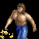Gold Miner
Work rate: +15%
Early game fights
With small maps which allowed Tool Age fights to happen the fights were usually Axeman/Slinger fights that ended the game. Not much of a variety in those fights and always with the same tactics.
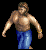 Villager
Attack base melee: 3 -> 4
Reload time: 1.5 -> 2
Clubman
Attack base melee: 3 -> 5
Reload time: 1.5 -> 2.5
 Battle Axe
Battle Axe
Food cost: 100 -> 150
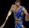Slinger
Stone cost: 10 -> 20
Stone Mining
Food cost: 100 -> 120
Stone cost: 50 -> 80
Scout
Food cost: 100 -> 80
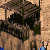Watch Tower
Reload time: 1.5 -> 1.4
Build time: 80 -> 72
Early Bronze Age choices
Most fights in early Bronze Age happened between Cavalry, Camel Rider and Chariot Archer. Those unit do have great macro play, but there is so much more that could be utilized.
Faster research but slower speed buff.
Wheel is a vital part of the game and is now available for all civilizations.
50% movement speed makes all fast units better at economy disturbing which gives the space to buff slow units allowing army composition to be more than only one unit type.
Villagers move: 65% faster -> 50% faster
Research time: 90 -> 50
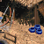Fast units
Generally weaker fast units.
Now fast units are weaker without being less effective onto each other. Rock/paper/scissor effect is stronger than it was, but it isn’t too strong. There is still a lot of space for an outplay even if your unit choices were not great.
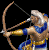Chariot Archer
Reload time: 1.5 -> 1.45
Frame delay: 6 -> 12
Hit points: 70 -> 63
Training time: 40 -> 44
Camel Rider
Training time: 30 -> 35
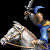Cavalry
Hit points: 150 -> 140
Bonus damage against infantry: 5 -> 6
Slow units
First tier units are stronger and cheaper to get.
Using few slow units in your army is a great choice now. First tier slow units are much more powerful making most civs to advance from only fast units to partially or totally to slow units towards the end of Bronze Age.
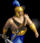Short Swordsman
Hit points: 60 -> 70
Attack base melee: 7 -> 8
Upgrade:
Requirement removed Battle Axe
Research time 50 -> 75
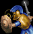Broad Swordsman
Hit points: 70 -> 90
Improved Bowman
Hit points: 40 -> 35
Attack base pierce: 4 -> 5
Reload time: 1.4 -> 1.5
Upgrade:
Food cost: 140 -> 70
Wood cost: 80 -> 40
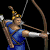Composite Bowman
Upgrade:
Food cost: 180 -> 320
Wood cost: 100 -> 200
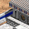Academy
Wood cost: 200 -> 175
Build time: 60 -> 45
Hidden Bonus stats
Couple units had hidden bonuses, now those bonuses are reworked to give more balanced bonuses so that a unit isn’t dedicated to fight against just a few different units.
Camel Rider
+8 damage against: Scout, Cavalry, Heavy Cavalry, Cataphract, Horse Archer & Heavy Horse Archer.
+6 damage against: Chariot Archer, Chariot & Scythe Chariot
+4 damage against: War Elephant, Armored Elephant & Elephant Archer.
Cavalry & Heavy Cavalry
+6 damage against: Clubman, Axeman, Swordsmen & Legion
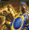 Cataphract
+9 damage against: Clubman, Axeman, Swordsmen & Legion
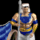 Chariot Archer, Chariot & Scythe Chariot
+4/7/9 damage against Priest (respectively)
Slinger
+2 damage against: Bowman
+3 damage against: Improved Bowman & Composite Bowman
+4 damage against: Elephant Archer
+5 damage against: Chariot Archer, Horse Archer & Heavy Horse Archer
Iron Age fights
In Iron Age there was heavy unbalance between units. With the high civilization specific bonuses and locked upgrades many civilizations were left with too few choices.
Fast units
Cavalry line more powerful, Scythet weaker. Cheaper super unit upgrades.There was huge imbalance between all fast units in Iron Age. Scythe Chariot overshadowed cavalry line in every aspect.
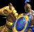 Heavy Cavalry
Armor base melee: 1 -> 2
Cataphract
Armor base pierce: 1 -> 2
Armor base melee: 3 -> 4
Upgrade:
Food cost: 2000 -> 1200
Gold cost: 850 -> 750
Research time: 150 -> 110
Scythe Chariot
Attack base melee: 9 -> 8
Armor base melee: 2 -> 1
Hit points: 120 -> 135
Upgrade:
Wood cost: 1200 -> 800
Gold cost: 800 -> 550
Research time: 150 -> 220
Metallurgy:
Attack base melee to Scythe Chariots: 3 -> 1
Slow units
Small buffs mainly to non super upgraded units.
In Iron age when massing units become easier slow units become much more effective than what slow units were in Bronze age and as so the Iron Age slow units will get much smaller bonuses.
 Long Swordsman
Long Swordsman
Hit points: 80 -> 110
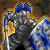 Centurion
Armor base pierce: 0 -> 1
War Elephant
Armor base melee: 0 -> 1
Training time: 50 -> 55
 Elephant Archer
Elephant Archer
Reload time: 1.5 -> 1.33
Gold cost: 60 -> 45
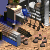 Siege and water units
Weaker Trireme, more usable Helepolis.
Water fight were over too fast and with too little preparation or counter play style.
Iron Age siege line units too often included only land Catapults.
Trireme was too strong. Catapult Trireme and Fire Galley were too often left untouched.
 Helepolis
Helepolis
Reload time: 1.5 -> 1.9
Range 10 -> 11
Catapult Trireme
Movement speed 1.35 -> 1.45
Hit points 120 -> 135
 Juggernaught
Juggernaught
Projectiles no longer destroy trees.
Upgrade:
Food cost: 2000 -> 1200
Wood cost: 900 -> 550
Research time: 180 -> 200
Scout Ship, War Galley & Trireme
Training time: 60 -> 76
Trireme
Reload time 1.8 -> 1.98
 Towers
Towers
Towers are great at early engages for both capturing and holding mines and other important resource position, but the high durability made it too easy to hold a position once it was in your control making games too often end up in a stalemate where no one can do any good damage until first Catapults roll out.
250 stone granted too many towers allowing defending players to hold the defense for too long granting them strong late Iron Age even if they had poor map control in mid and early game.
Watch Tower
Reload time: 1.5 -> 1.4
Build time: 80 -> 72
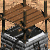Sentry Tower
Reload time: 1.5 -> 1.4
Build time: 80 -> 72
Hit points: 150 -> 125
Guard Tower
Reload time: 1.5 -> 1.4
Build time: 80 -> 72
Hit points: 200 -> 150
Ballista Tower
Hit points: 200 -> 150
Build time: 80 -> 72
Stone mine
Stone amount: 250 -> 200
Technologies
More usable Jihad, smaller Siegecraft bonus, cheaper Tower Shield, situationally usable Slinger.
Jihad+ Siegecraft was too strong combo against towers, but otherwise Jihad was almost useless. Now Jihad is more usable when mining resource in danger zones without being too effective in offensive plays.
Tower shield can now be used with Swordsmen to make an early Iron Age push and not just extra tank stat for the late game.
Slinger is easier and stronger to use in counter plays whilst still being extremely weak against most units.
 Jihad
Jihad
Attack damage +7 -> +6
reload time 2.0 -> 1.5
Carry capacity:
Hunters, Foragers, Farmers & Fishers: -8 -> -4
Gold Miners, Stone Miners & Woodcutters: -8 -> -7
Siege Craft
Villager +7 damage to towers -> +2 damage to towers
Slinger +1 attack and range -> +1 attack and +2 range
Iron Shield
Research time 75 -> 60
 Tower Shield
Tower Shield
Research time 100 -> 75
Food cost 250 -> 220
Gold cost 400 -> 340
Civilizations
Many civilizations had massive bonuses to weak units making those units good only for those few civs whilst otherwise being almost unusable for the rest of the civilizations. Now the units are buffed and the civilizations extreme bonuses have been greatly reduced.
Assyrian
Bonus villagers move 18% faster -> 14% faster
Babylonian
New bonus Builders work 25% faster
New bonus Villagers +1 pierce armor
Technologies disabled Improved Bowman, Composite Bowman, Irrigation, Coinage
Carthaginian
New bonus Cavalry and Heavy Cavalry +15% (+0.3) movement speed
New bonus Ballista and Helepolis fire 15% faster
Choson
Bonus removed Long Swordsmen and Legion +80 HP
New bonus All swordsmen and Legion +25 HP
Egyptian
Bonus priest range +3 -> +2
Greek
New bonus Academy units 20% cheaper
Hittite
Bonus War ships ranges 4 at all ages -> 2/3/4 at Tool, Broze, Iron
Bonus catapult bonus health 100% -> 66%
Technologies disabled Irrigation, Coinage
Macedonian
Bonus removed Siege Workshop units cost -50%
Bonus removed Academy units bonus pierce armor +2
New bonus Swordsmen and Academy units +1 pierce armor
New bonus Foot archers and siege workshop units 20% faster movement speed
Technologies disabled Heavy Horse Archer, Chain Mail
Technology enabled Wheel
Minoan
Bonus Ship cost -30% -> -20%
Technologies disabled Bronze Shield, Iron Shield, Tower Shield
Palmyra
Bonus villagers work at all tasks 33%/44% faster -> 25% faster
New bonus Starting food +25
New bonus Woodcutters carry capacity +3
Persian
Bonus Elephants move 55,6% faster -> 40% faster
Bonus Hunters work 67% faster -> 20% faster
New bonus Hunted animals grant 75% more food
Technologies enabled Wheel, Coinage
Phoenician
Bonus Woodcutters work 9,1% faster -> 15% faster (carry capacity from +3 -> +2)
Roman
Bonus removed Farms cost -15%
Bonus Swordsmen attack 50% faster -> 25% faster
Bonus Towers cost -50% -> -35%
Shang
Bonus removed Walls +100% hit points
New Bonus starting food decreased by 20
New Bonus 55% decreased wall build up time
Sumerian
Bonus villager bonus hit points +15 -> +11
Bonus farms have +250 food -> +125 food
Technology disabled Alchemy
Technologies enabled Craftsmanship, Coinage
Yamato
Bonus villagers move 18% faster -> 14% faster
Bonus All ships +30% hit points -> +20% hit points
Technologies disabled Irrigation, Architecture